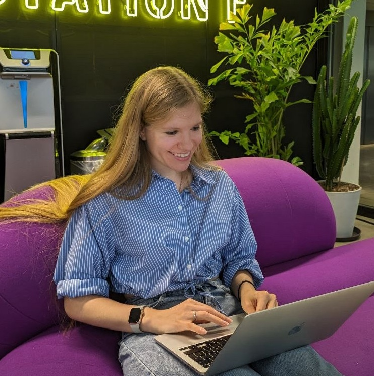

Anna Mosolova
Postdoctoral Researcher in NLP
ALManACH team, INRIA — Paris
PhD in Natural Language Processing
Université Paris Cité

ALManACH team, INRIA — Paris
PhD in Natural Language Processing
Université Paris Cité
Evaluation and post-training of Large Language Models for specialized domains in French
Word Sense and Frame Induction
Children's speech recognition, dialogue systems, recommendation systems, named entity recognition, content moderation systems
Multi-task machine translation from Russian to low-resource languages of Russia
Automatic accentuation system for Russian with regard to individual features of the speaker
Thesis title: Semi-supervised word sense and frame induction
Supervisors: Marie Candito and Carlos Ramisch
Natural Language Processing
Average: 17.2/20
Fundamental and Applied Linguistics
Average: 5.0/5.0
Authors: Virginie Mouilleron, Théo Lasnier, Anna Mosolova, Djamé Seddah
Proceedings of the 7th Financial Narrative Processing (FNP) workshop (colocated with LREC 2026)
Authors: Anna Mosolova, Marie Candito, Carlos Ramisch
Findings of the Association for Computational Linguistics (ACL 2025)
Authors: Anna Mosolova, Marie Candito, Carlos Ramisch
Actes de la 32ème Conférence sur le Traitement Automatique des Langues Naturelles (TALN 2025)
Authors: Anna Mosolova, Marie Candito, Carlos Ramisch
Proceedings of the 18th Conference of the European Chapter of the Association for Computational Linguistics (EACL 2024)
Authors: Anna Mosolova, Kamel Smaïli
Proceedings of the Fifth Workshop on Technologies for Machine Translation of Low-Resource Languages (colocated with COLING 2026)
Authors: Mosolova A.
Supplementary Proceedings of the XXII International Conference on Data Analytics and Management in Data Intensive Domains (DAMDID/RCDL 2020)
Authors: Mosolova A. V., Kutuzov A. B.
Computational Linguistics and Intellectual Technologies, Annual International Conference “Dialogue”, Student session
Authors: Mosolova A. V., Bondarenko I. Yu., Gusev P. A., Malysheva A. D., Vodolazsky D. I., Borovikova M. N.
Computational Linguistics and Intellectual Technologies, Annual International Conference “Dialogue”, Supplementary volume
Authors: Mosolova A.V., Borovikova M.N., Vodolazsky D.I.
Proceedings of 57th International scientific student conference ISSC-2019: Applied Linguistics
Authors: Pauls A.E., Mosolova A.V., Stroganov M.S., Timasova E.K., Shugalevskaya N.B.
Proceedings of 57th International scientific student conference ISSC-2019: Informational technologies
Authors: Mosolova A., Bondarenko I., Fomin V.
Proceedings of the Workshop on Figurative Language Processing (colocated with NAACL 2018)
Authors: Mosolova A., Bondarenko I., Fomin V.
Supplementary Proceedings of the Seventh International Conference on Analysis of Images, Social Networks and Texts (AIST 2018)